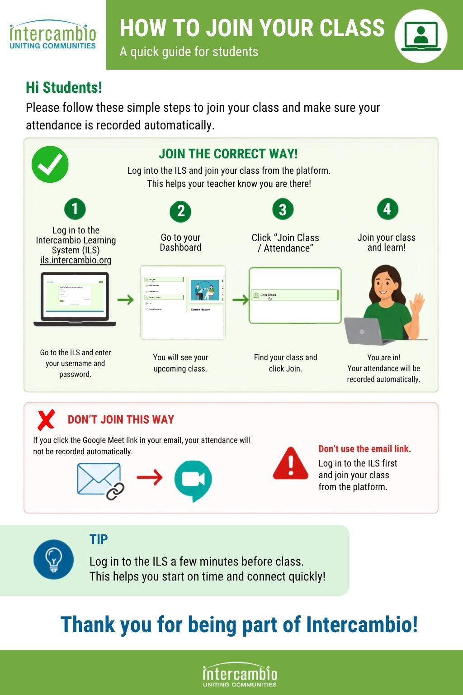

1
Log in to the ILS
Go to the Intercambio Learning System and enter your username and password.
A quick guide for Intercambio students
Always log into the Intercambio Learning System (ILS) first, then join your class from the platform. This helps make sure your attendance is recorded automatically.
Go to the Intercambio Learning System and enter your username and password.
After logging in, you will see your upcoming class information.
Find your upcoming class and select the Join Class button.
You’re in! Your class will open through the platform.
Log into the ILS before your class and join from the platform. This is the best way to make sure your attendance is recorded automatically.
Your class reminder email may include a Google Meet link. If you click that link directly instead of joining through the ILS, your attendance will not be recorded automatically.
Instead: log into the ILS first → find your class → click “Join Class.”

Log in. Join from the ILS. See you in class!